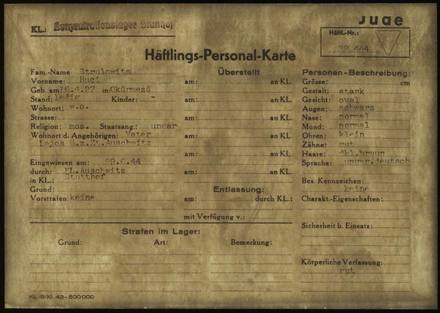
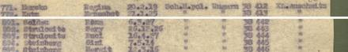
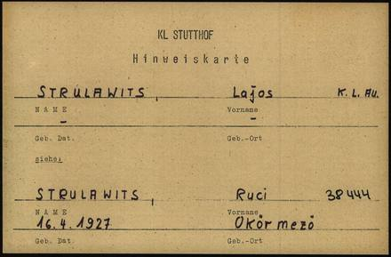
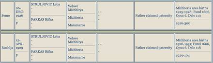
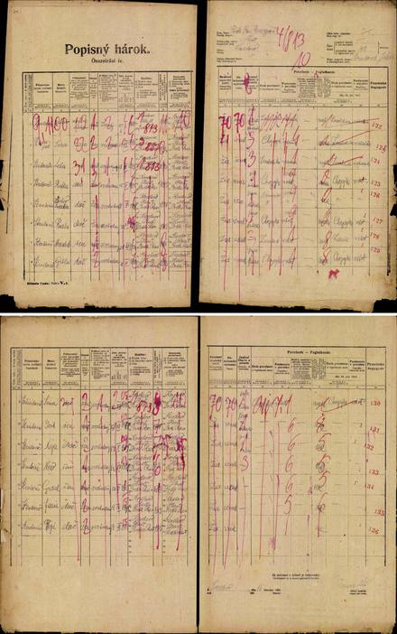
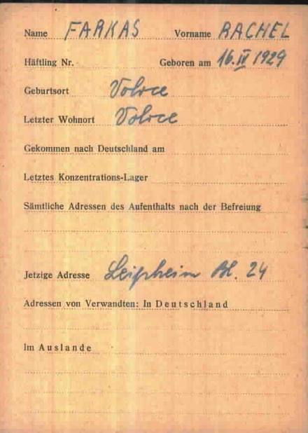

ידוע בוודאות מאומת
- נולדה ב-16.4.1929 בוולובה, בת אריה-לייב סטרולוביץ ורבקה-רוזה פרקש בדוח
- רשומות הלידה האזרחיות שלה ושל אחותה סימה, מארכיון DAZO בדוח
- שטוטהוף: 38443 ו-38444 — מספרי האחיות, בשתי יחידות ארכיון נפרדות בדוח
- מסלול הרדיפה מן המעצר ב-14.4.1944 ועד הקליטה בשטוטהוף ב-29.6.1944 בדוח
- רכבת אוקרמזו יצאה ב-17.5.1944 ובה 3,052 מגורשים בדוח
סולם הוודאות ומונחי המחקר — מה המילים האלה אומרות
עץ המשפחה
גלילה אופקית בתוך המסגרת מציגה את העץ במלואו, וכפתורי ההגדלה שמעליה מגדילים את הכתב; בהדפסה הוא מקבל עמוד לרוחב משלו.
פתיחת העץ בעמוד נפרד ↗ציר הזמן
כל אירוע מציין עד כמה הוא מבוסס, ומפנה אל המסמך שעליו הוא נשען.
- 1870 · 1876קושלובו · וולובה
סבה וסבתה נולדים בכפרי הרי הוורחובינה: יעקב סטרולוביץ בקושלובו, בן לייב וריבקה; שרה רפפורט בוולובה, בת גדליה רפפורט ואסתר כץ.
- מרס 1894אוקרמזו
אביה אריה-לייב נולד באוקרמזו — בעיירת אמו — בכור ארבעה-עשר ילדיהם של יעקב ושרה. סוחר עורות.
- 16.2.1921קושלובו
מפקד האוכלוסין הצ'כוסלובקי פוקד את בית מס' 30 בקושלובו: יעקב ראש הבית, שרה אשתו, ושלושה-עשר ילדים — משפחת אביה של רחל שמונה שנים לפני לידתה.
- 1923וולובה
בוולובה — עיירה שבה 766 יהודים ב-1921, ורוב חנויותיה בבעלות יהודית — פועלת "אגודת האשראי היהודית", שנוסדה ב-1923 ונרשמה מחדש ב-1941 לפי צו האפליה ההונגרי.
- 16.4.1929וולובה
נולדה בוולובה שבקרפטורוס, שלישית מבין חמישה ילדים לאריה-לייב סטרולוביץ ולרבקה-רוזה פרקש.
- 1939וולובה
הצבא ההונגרי מספח את האזור; חקיקה אנטי-יהודית, ועסק העורות של האב מוחרם.
- 14.4.1944וולובה
נעצרת בביתה — "Verhaftet am 14.4.44, am Orte" — יומיים לפני יום הולדתה החמישה-עשר.
- אפריל–מאי 1944גטו סקלנצה
שלושה ימים נעולים בבית הכנסת, ואחריהם שבועות בגטו סקלנצה שכפרו רוקן מתושביו.
- 17.5.1944קושיצה
המשפחה מגורשת ברכבת אוקרמזו, ובה 3,052 מגורשים, שנרשמה במפקד תחנת קושיצה.
- 19.5.1944אושוויץ-בירקנאו
הגעה לאושוויץ-בירקנאו; רחל וסימה נבחרות לעבודה, ואחותן גיטה בת השמונה נרצחת.
- 19.5.1944אושוויץ-בירקנאו
בסלקציה משיבה רחל שהיא בת חמש-עשרה, וקאפו מכריזה למנגלה "בת שמונה עשרה" — ומצילה אותה.
- 29.6.1944שטוטהוף
האחיות נקלטות בשטוטהוף במשלוח הנשים ההונגריות הראשון: סימה 38443, רחל 38444.
- 29.6.1944שטוטהוף
בקליטה מוסרת רחל ששני הוריה "כעת באושוויץ", וחותמת בכתב ידה "Sztrulovics Ruci".
- סוף קיץ 1944טורן
נשלחת למחנה העבודה טורן ונפרדת מסימה החולה — ולא תראה אותה עוד.
- ינואר 1945פראוסט
פינוי מחנות טורן: צעדת מוות בת כעשרה ימים, ובסופה הגעה לפראוסט שליד דנציג.
- 1946ליפהיים
אחרי השחרור נדדה מערבה ושהתה במחנה העקורים ליפהיים שבבוואריה, בלוק 24.
- מאי 1946מקווה ישראל
- 1949מקווה ישראל
פנקס הבוחרים תש"ט רושם במקוה ישראל: "פורקוש (רפופורט), רחל, בת אריה, 1929".
- 23.12.2009
מוסרת ליד ושם עדות מצולמת בת שעתיים וארבעים דקות.
- ינואר 2021חולון
נפטרה בחולון, כבת תשעים ואחת.
המסמכים
לחיצה על תמונה פותחת את הסריקה המלאה; "בדוח" מוביל אל הקריאה המלאה של המסמך.






המקורות
כל קביעה בדף הזה נשענת על אחד המקורות שלהלן. כל ערך מוביל אל אינדקס המקורות שבדוח, ושם — קישור אל הרשומה בארכיון שממנה נלקחה ואל עותק שמור שלה.
- עדות הווידאו של רחל, יד ושם O.3/8424116 (23.12.2009)
- התמליל המתוזמן המלא של העדות
- ארבעה דפי עד בכתב ידה של רחל (22.11.2013), יד ושם
- תיקי שטוטהוף המקוריים — סריקות מארכיון ארולסן
- התיק האישי של גדליה בבוכנוולד, ארולסן
- ארכיון מוזיאון שטוטהוף — מסמכי הטרנספורט ומחנות העבודה
- כרטיס מרשם השמות המרכזי (CNI), ארולסן — ליפהיים
- JewishGen — רשומות אזרחיות מפונד 1606, ארכיון DAZO
- מסמכי מחנות וטרנספורטים — רשימת תחנת קושיצה, דגו"ב
- הנצחה ועדויות — עדות ריטה שניידר-פולק, KehilaLinks
- התיעוד הישראלי — IGRA וארכיון המדינה
- עלון יוצאי קרפטורוס 137 (08/2025)
- גיליון מפקד 1921 המקורי, ספריית Hungaricana